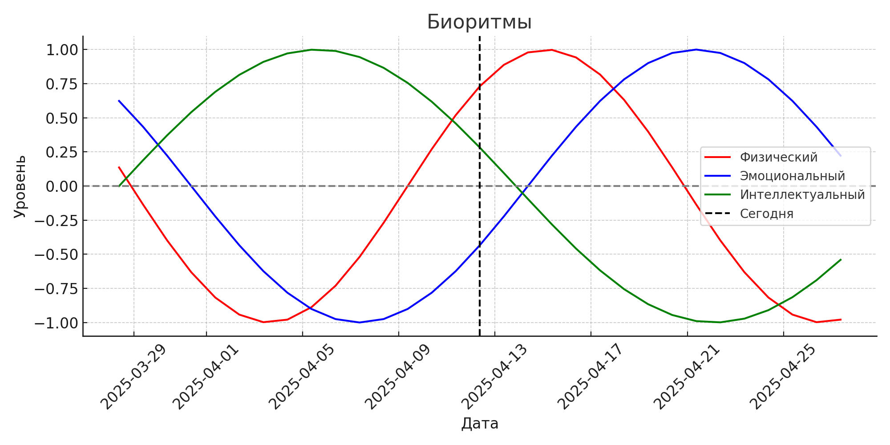

Биоритмы Циклы, отражающие физическое, эмоциональное и интеллектуальное состояния человека. — это теория, согласно которой наша жизнь подчинена определённым биологическим ритмам, повторяющимся с постоянной периодичностью. Понимание своих биоритмов может помочь лучше планировать важные дела и следить за своим состоянием.
Что означают линии на графике?
- Физический ритм (красный) — цикл в 23 дня, определяет уровень энергии, силы, выносливости.
- Эмоциональный ритм (синий) — 28-дневный цикл, влияет на настроение, чувствительность, восприятие.
- Интеллектуальный ритм (зелёный) — 33 дня, отражает ясность ума, концентрацию, логическое мышление.
График биоритмов Дарьи
Дата рождения: 24 октября 2005

Наведи на линии, чтобы увидеть: красный — физический, синий — эмоциональный, зелёный — интеллектуальный ритм.